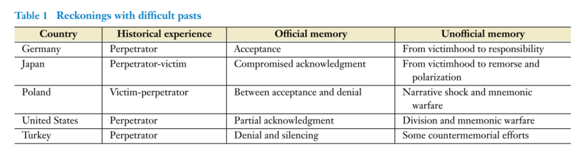

收录于合集
文献来源： Geneviève Zubrzycki and Anna Woźny, “The Comparative Politics of Collective Memory,” Annual Review of Sociology , Vol. 46, No. 1, 2020, pp. 175-194.
作者简介： Geneviève Zubrzycki，密歇根大学社会学教授，研究领域为比较-历史与文化社会学，关注民族国家与宗教认同等议题；Anna Woźny，密歇根大学社会学系博士候选人。
一、引言与定义
乔治·奥威尔曾在《1984》中写道：“谁控制了过去，谁就控制了未来。谁控制了现在，谁就控制了过去。”显然，集体记忆是政治家们着力争夺的合法性资源，也是学者们持续关注的社会、历史和文化议题。在过去的几十年中，这一领域的研究不断壮大，甚至逐渐成为人文和社会科学的核心议题，哲学和自然科学的诸多学科也开始介入这这一领域。2008年，《记忆》（Memory）杂志创刊，成为了集体记忆领域的第一本专门期刊。随后，相关手册（2008/2011）和学会（2016）也相继问世。
这篇文章从三个大方面综述了有关集体记忆的不同学科、不同流派和不同方法的重要文献：1. 集体记忆在民族国家及其认同的建构、维系、合法化和制度化中的作用；这一支文献主要由民族主义学者的先驱开创，他们明确了集体记忆的重要地位。2.有关苦难历史、集体创伤、对记忆的政治争论等问题的经验研究；这一支文献对于具体问题的研究贡献巨大，它们将集体记忆汇集成一个完整的研究领域；作者在这一部分回顾了德国、日本、波兰、美国和土耳其的案例。3. 记忆政治学研究的最新趋势；这一支文献试图超越民族国家的框架并从全球的视角来理解集体记忆。
一般地，记忆政治学研究政治行为者和机构对集体记忆的塑造，而大多数集体记忆都关涉政治。德国人专门使用“Geschichtspolitik”一词来描述其对纳粹历史的清算，包括正式的道歉、赔偿和纪念。可见，记忆的政治总是涉及对过去的辩论，以及如何更广泛地记录、记忆和传播过去，又或者如何沉默和遗忘。政治家总是尝试对记忆区分真假，并以自己喜欢的方式来叙述和解释历史。因此，政权更迭往往意味着集体记忆的重构。在很多国家，重要的集体记忆会被载入宪法，并在日常的教育和宣传中不断被灌输给民众。
二、集体记忆与民族主义
集体记忆是民族主义学者无法回避的核心议题。其中一波文献致力于揭开古代民族的历史起源和现代民族国家建构的真相，另一波文献则着重探讨各国利用集体记忆来巩固国家认同和民族团结的实践。
在人类漫长的历史中，现代民族国家仍然是个新鲜事物，它需要与过去截然不同的合法性资源。因此，急迫的政治需要催生了以民族国家为中心的历史叙事。事实上，政治精英甚至会乐于“发明”历史。因此，对于当代（西方）的大多数人而言，他们映像中的历史都是在民族国家形成的时代被建构起来的（约1870-1914）。这一做法有很强的目的性，它能帮助精英团结普通民众、培养认同与忠诚从而度过动荡的乱世。这一时期突然涌现的各种纪念日和纪念碑就是极好的佐证。也有学者指出，纪念活动的兴起恰恰是因为真实记忆的消逝，因此现代民族国家的集体记忆总是带有乡愁和怀旧的意味。
国家认同离不开集体记忆，但也同样离不开“集体失忆”。这意味着人们必须遗忘和篡改一些国家历史。譬如许多国家都刻意淡化了内部群体相互残杀的历史。可见，利用集体记忆来建构国家认同是有代价的，因为必须舍弃对其他群体的记忆、忠诚和认同。换言之，地方认同和种族认同必然受到压制。有趣的是，在后现代主义的文献中，这些非国家中心的记忆和认同又得到了异乎寻常的关注。
集体记忆由精英主导，但却常常出现在日常场合中。事实上，婚丧嫁娶、游行抗议甚至宗教活动中总是出现集体记忆的符号和仪式，这使得共同体成员发自内心地产生和接受了国家认同。当然，集体记忆和国家认同也会进入更为高雅的艺术作品和文化遗产中。因此几乎所有国家都会花重金发掘和保护自己的“国宝”。可见，庸俗的、平常的或高雅的载体都可以承载集体记忆。因此对于普通民众而言，国家认同和民族主义是无可避免的。
三、面对不光彩的记忆
集体记忆并不总是光荣的。民族国家很难完全回避自己在历史中经历的分裂、崩溃、战败和其他天灾人祸，而这些关键节点无疑会激起公共舆论对于集体记忆的争辩。政权更迭往往意味着大量资料的解禁，而新的政治精英总会将自己与前任区别开来。因此新的政府总是出台与过去一刀两断的政策，譬如告别弗朗哥的西班牙和剧变之后的波兰。但对于本国在历史上的罪行，各国精英的对策则大有不同。

战后德国是悔罪认错、承担责任、重建国家认同的典型。德国的目标是明确的，但这一过程仍然曲折复杂。去纳粹化是最重要的开端，德国的民族性也被重新审视。这意味即使是作为纳粹的受害者，普通德国人也要承担自己的责任。盟军着力向德国民众展示和传播纳粹的暴行，甚至让他们参观集中营，从而让他们产生集体内疚和悔恨。这最终使得集体罪恶感被牢牢地编入国家叙事。虽然也有一些争议，但大多数人都赞赏德国的担当，这部分源于战后日本行径的对比。日本将自己同时定义为施暴者和受害人。虽然战后日本将“爱好和平”写入了宪法，但普通民众仍然对广岛长崎事件与盟军占领耿耿于怀。一方面，美国豁免了日本天皇的罪行，又亲自主导了日本的非军事化。这使得日本民众的集体记忆变得纠结而复杂。另一方面，虽然中韩两国要求坚决，但西方社会对日本道歉的国际压力很小。这使得日本悔罪认错的过程拖延了半个世纪。而在八十年代经济腾飞后，日本的民族主义情绪又开始抬头。直到裕仁天皇去世后，道歉才被真正提上日程。然而直至今日，各种历史性问题周而复始的重现，日本民众的国家认同也始终在暴者和受害人之间摇摆。同样具有典型双重身份的是波兰。在剧变之前，波兰官方话语将二战单纯定义为（资本主义的）法西斯主义的恶行，而社会主义波兰完全是受害者。但在剧变之后，波兰对犹太人的屠杀逐渐浮出水面并被编入了正统的国家叙事。
美国的案例可以帮助我们看清一些不那么剧烈的变革后的记忆政治。六十年代的红权运动（Red Power Movement）唤起了美国民众对于土著悲惨遭遇的关注。这也在很大程度上打击了美国国家认同的神话。类似地，有关黑奴、内战和种族隔离的集体记忆总是牵动着美国人的神经。然而，虽然舆论愈演愈烈，但美国官方的政策一直是将责任推给具体的个人，而绝不承认集体罪恶感。比美国更为极端的案例是土耳其，其政府完全否认历史上对于奥斯曼亚美尼亚人的迫害。不仅如此，倡导土耳其与亚美尼亚和解的知识分子被民族主义份子暗杀，签署倡议书的学者和政治家也屡屡遭受威胁。面对强大的国内外压力，土耳其政府为什么我行我素？有学者认为，这是因为“青年土耳其党”也卷入了暴力事件。承认暴行意味着对土耳其国父凯末尔的谴责，这会在根本上摧毁土耳其人的国家认同，因此每一代的土耳其政治家都选择了否认。
四、结语：迈向全球化的集体记忆
在全球化背景下，快速传播的流行文化和不断崛起的互联网通讯使得人们得以构建跨国的集体记忆。因此记忆政治学研究也逐渐尝试摆脱民族国家的框架。譬如在《安妮日记》和《辛德勒的名单》等文艺作品的全球传播中，纳粹大屠杀的集体记忆被再次建构和扩散。一些学者认为，类似的跨国记忆这是形塑欧洲认同的良机，特别有利于欧盟东扩。因此，欧洲议会在2005年1月27日奥斯威辛集中营解放60周年时宣布设立欧洲纪念日。然而目前的民粹主义和疑欧主义正在逆转这一趋势。此外，随着各国的深入交往，一些重大事件也无可避免的成为了全球人民的集体记忆。譬如“9·11”成为了所有人心中的恐怖主义标识。幸或不幸的是，全球化使得政治精英难以单方面篡改集体记忆。一旦某个国被国际社会贴上了负面的标签，想要改变形象就会难于登天。
集体记忆是19世纪建构民族国家的利器，也是20世纪与历史暴行决裂的负担。在21世纪，集体记忆无可避免地走向了全球化。在我们所处的时代，不同范围的集体记忆相互交叠，这导致次国家认同、国家认同和超国家认同难以分割。在政治精英的煽动下，民族主义和民粹主义不断加剧着怨恨的政治。而在铺天盖地的政治传播中，操纵过去似乎变得更为简单。作为这一切政治乱象的源头，集体记忆无疑值得更多、更好的研究。
注：
编译对原文进行了较大删改，详情请参见原文链接或点击 “阅读原文” ：https://www.annualreviews.org/doi/pdf/10.1146/annurev-soc-121919-054808
推荐阅读：
马得勇. 国家认同、爱国主义与民族主义——国外近期实证研究综述 [J]. 世界民族, 2012, 03): 8-16.
马得勇, 陆屹洲. 信息接触、威权人格、意识形态与网络民族主义——中国网民政治态度形成机制分析 [J]. 清华大学学报(哲学社会科学版), 2019, 34(03): 180-92+97.
吴玉军, 顾豪迈. 国家认同建构中的历史记忆问题 [J]. 中国特色社会主义研究, 2018, 03): 69-76+2.
王海洲, 潘雯菲. 国歌认知与国家认同构建的实验政治心理学研究[J]. 政治学研究, 2020(03): 67-79+127.
编译：陆屹洲 审校：杨端程 编辑：康张城
【政文观止Poliview】系头条号签约作者